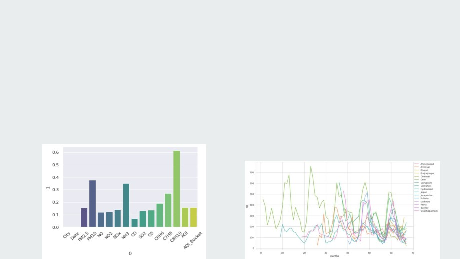

Air Quality Index Prediction
Machine Learning Internship at FTS
By,
Akshata Kotti
Shubham Urmaliya
Abhishek
Shreya Basu
Neha Kumari
Lokesh
Contents
● Problem Statement
● Data Visualisation before preprocessing
● Data Visualisation on AQI
● Data preprocessing
❖ Missing value treatment
❖ Air Quality Index(AQI) calculation
❖ Outlier treatment
● Data Visualisation after preprocessing
● Model Making
❖ XGBoost
❖ Stacked LSTM
Problem Statement
To create a model which will predict the Air Quality Index (AQI).
We were given two datasets:
1. cities_by_day → day-wise information including the amount of various chemical substances
present in different cities and the AQI information.
2. cities_by_hours
→ hours-wise information including the amount of various chemical
substances present in different cities and the AQI information.
We have initially performed Exploratory Data Analysis including Data preprocessing, Outlier
treatment and Data visualization to study the datasets.
We have then used certain algorithms like XGBoost and Stacked LSTM to create a model that
will predict the AQI for any future reference using the input we are giving.

Data Visualisation before preprocessing
We used some visualisation techniques to understand the trends and relationships between different
columns. The results are following.
● There are a lot of missing values for xylene,PM2.5 and NH3. But after looking at correlations
AQI is reasonably dependent on these gases. So it is not good to drop these columns.
● The second image is a plot of PM(PM2.5 +PM10) with months. From this graph we can see that
values are not missing at random they are missing for long periods of time from this we found
that the imputation methods like linear interpolation will not give realistic results and we started
thinking about methods like KNN imputation.
Data Visualisation on AQI
patterns in data.
Visualization has been done on the dataset of cities_by_day to study certain trends. Some screenshots have been
attached herewith. The link to the file has been given here:
Calculating the proportion
Grouping the cities based on average AQI
Pie-chart showing distribution of
of missing values
pollutant in top polluted cities
Data preprocessing
KNN Imputation
Outlier Detection Using Quantile Regression
def
fun(dframe):
Q1=df['AQI_calculated'].quantile(0.25)
lis =
[]
Q3=df['AQI_calculated'].quantile(0.75)
for i in
range(0, dframe.shape[1]):
IQR=Q3-Q1
if(dframe.iloc[:,i].dtypes ==
'object'):
print(Q1)
dframe.iloc[:,i] =
pd.Categorical(dframe.iloc[:,i])
print(Q3)
dframe.iloc[:,i] =
dframe.iloc[:,i].cat.codes
print(IQR)
dframe.iloc[:,i] =
dframe.iloc[:,i].astype('object')
Lower_Whisker =
Q1 -
1.5*IQR
Upper_Whisker =
Q3 +
1.5*IQR
lis.append(dframe.columns[i])
print(Lower_Whisker, Upper_Whisker)
KNN =
KNNImputer(n_neighbors=3)
df =
df[df['AQI_calculated']<
Upper_Whisker]
dframe =
pd.DataFrame(KNN.fit_transform(dframe))
return
dframe
Data Preprocessing of Cities_by_day and Cities_by_hours dataset
1] Missing value treatment: Methods used to treat missing values are:
● Citywise Mean imputation
● Citywise Linear interpolation
● Citywise K-Nearest Neighbors(KNN) imputation
2] AQI calculation: AQI is the maximum of sub-indices calculated for individual pollutants.
3] Outlier treatment: Outliers were detected and treated using Quantile Regression.
Percentage of missing
Percentage of missing
values in cities_by_day:
values in cities_by_hour:
Data Visualisation after preprocessing
Visualization has also been performed after preprocessing the dataset cities_by_hours i.e., removing the
missing values in the dataset.
Proportion of missing
Pie-chart showing imputed AQI
Correlation analysis
values has been reduced
values for top polluted cities
to zero
Model Making - (i) XGBoost Regressor
def
fun(Ahm):
n_estimators =
[int(x) for
x in
np.linspace(start=100, stop=1200, num=12)]
Ahm.drop(['City'],axis=1,inplace =
True)
learning_rate
=
[0.05, 0.1, 0.2, 0.3, 0.4, 0.5, 0.6]
Ahm.set_index('Date', inplace =
True)
max_depth =
[int(x) for
x in
np.linspace(5, 30, num=6)]
Ahm=Ahm.astype('float64')
subsample =
[0.7, 0.6, 0.8]
Ahm=Ahm.resample(rule='MS')
.mean()
min_child_weight =
list(range(3, 8))
objective =
['reg:squarederror']
ax=Ahm[['AQI_calculated']].plot(figsize=(16,12),grid=True,lw=2,color='Red')
params =
{
ax.autoscale(enable=True, axis='both', tight=True)
'n_estimators': n_estimators,
X =
Ahm.iloc[:, :-1]
'learning_rate': learning_rate,
y = Ahm.iloc[:, -1]
'max_depth': max_depth,
'subsample': subsample,
X_train, X_test, y_train, y_test =
train_test_split(X, y, test_size=0.3,
'min_child_weight': min_child_weight,
random_state=43)
'objective': objective
}
xgb =
XGBRegressor()
xgb.fit(X_train, y_train)
search =
RandomizedSearchCV(xgb, params,
f'Coefficient of determination R^2 on train set {xgb.score(X_train, y_train)}'
scoring='neg_mean_squared_error',
f'Coefficient of determination R^2 on test set {xgb.score(X_test, y_test)}'
cv=5, n_iter=100, random_state=43, n_jobs=-1,
score =
cross_val_score(xgb, X, y, cv =
3)
verbose=True)
score.mean()
search.fit(X,y)
pred =
xgb.predict(X_test)
search.best_params_
search.best_score_
sns.distplot(y_test -
pred)
pred =
search.predict(X_test)
sns.distplot(y_test
-pred)
Final Result
pred =
search.predict(X_test)
print(f"Mean Abs Error: {metrics.mean_absolute_error(y_test, pred)}")
Mean Abs Error: 0.0033662200716981887
print(f"Mean Sq Error: {metrics.mean_squared_error(y_test, pred)}")
Mean Sq Error: 0.00011384331947930463
print(f"Root Mean Error: {np.sqrt(metrics.mean_squared_error(y_test, pred))}")
Root Mean Error: 0.010669738491608153
Citywise mean squared error
(ii) Stacked LSTM
LSTMs are widely used for sequence prediction problem. The stacked LSTM model was capable of
forecasting future days AQI for different cities on basis of past AQI information available.
Citywise Mean Squared error
Thank You !
[Github link for our project]
[Drive link for our project]
[References]